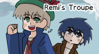

yukitoyath.static.jp：伺か特設コンテンツ

今のところ、パブリックドメイン作品の二次創作ゴースト、シェルを配布しています。
配布物
その他
ゴースト開発関係リンク
ばぐとら研究所 / 伺かのシェルの作り方 / イカガカ
きのこ / Internet Archive 2004.9.21
一点の曇りもない：ななろだ / さとりすと
基本的に物置き：はじめてのゴーストの作り方 / 作例で学ぶ、ゴーストの作り方
里々wiki：ポストと狛犬 / 簡単なシェルの揚げ方